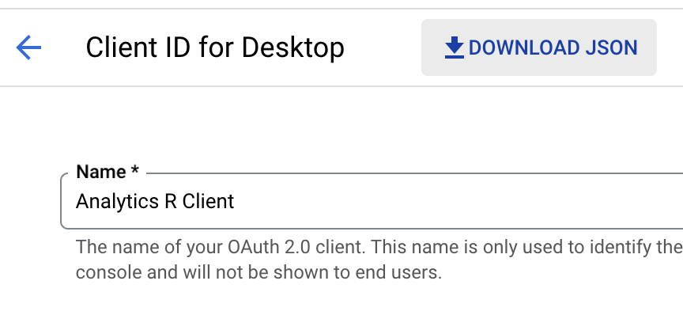
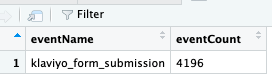

The Analysis Gap
In marketing there’s often a gap between the collection and reporting of data. That gap is Analysis.
For small businesses without in-house expertise the analysis of marketing data is a giant void. GA4 makes it easy to collect marketing data but it’s much harder – and more expensive – to report it thoroughly and check for meaning.
Searching out meaning in data inevitably falls by the wayside in small businesses. Know why?
‘Too busy’ you say?
Well yes business owners face myriad tasks day-to-day. But how about this…
There’s a steep learning curve. Yep, the clicks and sales keep coming so why bother trying to understand all that data?
Just keep going and hand over the collection and analysis to someone else. Right?
WRONG!
If you don’t know what you’re looking at you can’t tell if you’re being sold a dud.
That ‘someone else’ you’re paying for is a bit of a lottery.
Hiring a third party doesn’t mean the task of analysing your data will be done correctly. I’m going to tell you a story.
It’s a simple one and it demonstrates this issue nicely.
Our central character is Phil (and no, that’s not his real name).
Phil showed me the report he’d received from his outsourced SEO expert. In it the word ‘improvement’ featured in nearly every paragraph.
Improvement this, improvement that. Poor Phil.
He thought he was doing great. Was he?
It was impossible to tell if the expert’s language used was simply to hide the truth. Nevertheless, Phil never stopped to consider if improvement really meant that.
You know why?
Yes, yes, he was busy. Sure.
But worse than that.
OK, I’ll tell you.
There was not the slightest consideration of business objectives in Phil’s entire strategy. So the whole report really could have been showing improvements.
But we’d never know what had improved.
I took a look at Phil’s stats and I’ll tell you about that later.
A month on month increase in page views is not an improvement unless your business objective is page views.
An increase in site bounces is not an improvement. Plain as day. It’s an increase. Bounces going up? Poor Phil.
The saddest part though…
Phil is no exception.
Most clients seem stumped when I ask them what the goal of analysing their data is.
Ask that question to a new client. See the look of surprise and bewilderment? No-one has asked them before. Why would they? Isn’t it obvious? Higher revenues! More clicks!
It depends.
Why R is a Powerful Tool for GA4 Reporting
You know the saying ‘if you only have a hammer everything looks like a nail’ ?
Sometimes progress is better examined by looking at metrics not reported in the standard GA4 interface.
Even those owners who can state their objectives will not have considered that.
Here’s an example.
Perhaps it would be more useful to check what itemsets customers put in their basket. Then we can ask new questions:
Was there something driving their choices?
Can we predict what items they’re likely to choose next?
Should we look at social data to examine sentiment?
There are many factors at play so why limit ourselves to what we’re served by Google?
I’ll demonstrate below how to retrieve Google Analytics (GA) data using the GA4 API directly in R. We’ll be using the excellent googleAnalyticsR library by Mark Edmondson and in future articles I’ll go further with some analysis techniques but all will flow from this initial, fundamental step.
Before we begin plugging away with R there’s some setup necessary in Google Cloud.
Connecting R to Your GA4 Data
Get Credentials in Google Cloud Console
We’ll need to enable some APIs so first head on over to Google Cloud Console and create a new project.
In this new project enable the Analytics Reporting API, Google Analytics API and the Google Analytics Data API. Yep, all three. Not all of these will be necessary straight away but you’ll need them soon enough so may as well do this now.
Still in the cloud console, create a new OAuth client ID in order to allow login and retrieval of the data while in R. This will be a desktop app so ;
Click Credentials
Create Credentials
Choose OAuth client ID
Select ‘Desktop app’ and give it a nice name. Something catchy.
Click Create
Now, back at the credentials page, download your credentials as a .json file.
Click the credentials you just created
Click ‘Download JSON’

Once that’s all setup we’re done with Google. Fire up RStudio if you haven’t already.
Setup A New Project in RStudio
Now there’s obviously many ways to set up a project but I’m fastidious when it comes to keeping everything atomic, preferring to keep each project in its own directory. This way, I can keep my .Renviron file unique to a project and should I need to move the project somewhere, I can just move the folder and it’s done. Enough about me.
Create a new folder for this project and set it the working directory and create a .Renviron file with the following contents…
GAR_CLIENT_JSON=./client.json…and move the `client.json` file downloaded from Google into your project folder.
Obligatory package install. We’ll be using the excellent `googleAnalyticsR`.
install.packages("googleAnalyticsR")Create a new R script file and load the library we just installed.
library(googleAnalyticsR)You’ll notice a message in the console similar to the following…
Setting client.id from ./client.jso
No consent file foundNo bother, we’ll then authorise with…
ga_auth()You’ll be prompted to choose with identity to login with and you simply select an option in the console window. So far, so good.
If you wish to see the list of accounts you have access to you’ll have to use the following to return a character array fo account names;
account_list <- ga_account_list()Remember, GA4 doesn’t use views like Universal Analytics does. Just stick with using propertyID and you’ll be fine.
Reading GA4 Data With R
Let’s see some data, shall we? With the property ID you’re interested in you simply use;
metadata <- ga_meta("data", propertyId = XXXXXXXXX)Dimensions, Metrics and Filters
Let’s check out a few GA4 dimensions and see what happens.
dimensions <- ga_data(
XXXXXXXXX,
metrics = c("activeUsers","sessions"),
dimensions = c("date","city","dayOfWeek"),
date_range = c("2023-01-01", "2023-01-31")
)You’ll notice that GA4 is returning a maximum of 100 rows. Should you wish to see all rows you can use the `limit` parameter as follows;
dimensions <- ga_data(
XXXXXXXXX,
metrics = c("activeUsers","sessions"),
dimensions = c("date","city","dayOfWeek"),
date_range = c("2023-01-01", "2023-01-31"),
limit = -1
)eventNames are used as they appear when using the GA4 web interface. But if you’re in any doubt you can always check…
events <- ga_data(
XXXXXXXXX,
metrics = NULL,
dimensions = "eventName",
date_range =c("2023-01-01", "2023-01-31")
)Taking this further, we can filter events to just see those of interest. For example, I’ve setup a custom event that is fired when a Klaviyo form is submitted. We’ll use the `ga_data_filter` function like so;
klaviyo <- ga_data_filter(eventName=="klaviyo_form_submission")And then use the filter it creates in a query;
filteredKlaviyo <- ga_data(
XXXXXXXXX,
metrics = "eventCount",
dimensions = "eventName",
dim_filters = klaviyo,
date_range =c("2023-01-01", "2023-01-31")
)The results of this query are basic because this filter isn’t particularly useful, it’s just a demo.

Lastly, let’s check out the realtime data. Handy for taking snapshots of running campaigns…
ga_data(
propertyId = XXXXXXXXX,
raw_json = '{"metrics":[{"name":"activeUsers"}],"limit":100,"returnPropertyQuota":true}',
realtime = TRUE)There you have it. All of the above is enough to get you started examining marketing data in R. You can then cut and slice it however you prefer. Maybe you’ll use ggplot2 for some funky dataviz or merge with offline data ready for import back into GA4.
Enjoy!